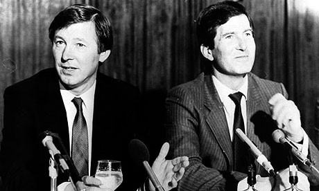

Chương 18

rở về từ Mexico, Alex Ferguson lại bắt đầu một mùa bóng mới cùng Aberdeen. Cho rằng trợ lý Willie Garner không đủ năng lực, ông gạt bỏ anh, và đón chào Archie Knox trở lại từ Dundee. Lần này, Knox nhận chức danh “đồng HLV”, tức là ngang hàng với Alex về mặt danh nghĩa.
Sở dĩ Alex trao quyền hành cho Knox, là vì tâm hồn ông đã không còn ở tại Pittodrie. Từ tháng 4 năm 1986, ông đã thông báo cho chủ tịch Dick Donald ý định từ chức. Nhằm giữ chân Alex, Donald bổ nhiệm ông làm thành viên ban lãnh đạo CLB. Nhưng ban lãnh đạo hay không thì cũng thế, khi Alex không còn động lực. Sứ mạng của ông đã thành công rực rỡ, Aberdeen đã vượt mặt Rangers-Celtic để trở thành đội bóng mạnh nhất Scotland, thậm chí giành cả Cúp C2 Châu Âu. Tuy vậy, đi đầu rồi thì biết đi đâu? Nếu như không có một chất xúc tác cực lớn (như kiểu Roman Abramovich), mỗi CLB đều có giới hạn của nó: St Mirren không thể trở thành Aberdeen, và Aberdeen không thể trở thành Liverpool. Muốn vươn tới những đỉnh cao hơn nữa, muốn thống trị cả làng bóng châu Âu, chỉ có cách rời khỏi Pittodrie.
Không thiếu những đại gia mời mọc Alex. Năm 1985, Barcelona từng tiếp cận ông, nhưng sau cùng, hai bên không đạt được thỏa thuận. Ngay trước World Cup, Arsenal ngỏ lời lần thứ hai. Alex hứa: Sau khi trở về từ Mexico, sẽ có câu trả lời. Song có lẽ do thấy Alex tiếp xúc cùng Bobby Charlton, cộng với nghe được nhiều lời đồn về việc ông sẽ tới Old Trafford, ban lãnh đạo Arsenal quyết định ký hợp đồng với George Graham.
Manchester United bắt đầu chú ý đến Alex Ferguson từ sau chiến tích giành Cúp C2 năm 1983. Nghe được chuyện Alex chỉ trích cầu thủ kịch liệt sau trận chung kết Cúp QG, bất chấp việc Aberdeen đã thắng Rangers, chủ tịch United, Martin Edwards, lại càng ấn tượng. “Rất hay”, Edwards nói, “Thắng thôi chưa đủ, mà còn phải thắng đẹp. Đây chính là người chúng ta cần.” Bobby Charlton, một thành viên khác trong ban lãnh đạo, cũng rất thích Alex. Ông thường xuyên hỏi chuyện hai cầu thủ United, Gordon Strachan và Arthur Albiston, về ông thầy của họ ở đội tuyển Scotland. Như đã thuật ở chương trước, Charlton còn đích thân đến gặp Alex ở Mexico.
Trong những cuộc điện thoại với thầy cũ, Gordon Strachan tiết lộ cho Alex hay United sẽ mời ông về làm HLV trưởng, nhưng Alex vẫn nghĩ đó chỉ là lời đồn. Cho đến một ngày, ông được thư ký thông báo: Có Alan Gordon, kế toán viên của Strachan, gọi tới. Nhấc điện thoại lên, ông nhận ra ngay: Đầu dây bên kia không phải Gordon, mà là một người Anh nào đó đang cố “nhái” chất giọng địa phương Scotland. Sau này Alex mới biết đó là Mike Edelson, một giám đốc của Manchester United. Edelson chuyển máy cho chủ tịch Martin Edwards.
“Alex, anh có đồng ý chuyển sang làm HLV trưởng ở Old Trafford không?”
Dĩ nhiên, Alex trả lời “Có”, không cần suy nghĩ.
“Vậy thì tối nay tôi đến Scotland, chúng ta sẽ gặp nhau ở một địa điểm bí mật, không để ai thấy, có được không?”
Sao phải “hình sự” như vậy? Tại sao Edelson phải giả giọng Scotland để lừa tổng đài Aberdeen? Tại sao ban lãnh đạo United phải gặp Alex ở nơi kín đáo? Giải thích cũng khá dài dòng. Nguyên là năm 1981, sau khi đuổi việc Dave Sexton, United gửi lời mời đến ba ứng viên: Lawrie McEnemy, Bobby Robson, và Ron Saunders, cả ba đều công khai từ chối. Rút kinh nghiệm vụ đó, lần này ban lãnh đạo CLB quyết định phải tìm cho được người thay thế rồi mới sa thải HLV đương nhiệm Ron Atkinson. Do Atkinson vẫn đang nắm quyền tại Old Trafford, việc thương lượng với Alex phải được tiến hành trong vòng bí mật.
Bảy giờ tối hôm ấy, Alex lái xe tới điểm hẹn: Một trạm sửa xe ở Hamilton, phía Nam Glasgow. Toàn thể ban lãnh đạo Manchester United: Martin Edwards, Bobby Charlton, Mike Edelson, và Maurice Watkins, đợi ông ở đó. Họ lại cùng nhau sang điểm hẹn thứ hai: Nhà người chị của Cathy ở Bishopbriggs. “Phái đoàn” vừa đến Bishopbriggs, chưa kịp bước vào nhà, thì một láng giềng ở kế bên đã nhận ra Bobby Charlton (ai mà không biết Charlton?). May mà người này không đánh động cho báo chí, và bí mật vẫn được giữ kín.
Cuộc đàm phán khiến Alex thất vọng. Nguyên tắc của Alex là: Lương HLV trưởng luôn phải cao hơn lương cầu thủ, nhưng mức lương United đưa ra cho ông lại thấp hơn lương các cầu thủ trụ cột ở Old Trafford như Bobby Robson, Jesper Olsen, và Gordon Strachan, thậm chí thấp hơn mức lương ông đang hưởng tại Aberdeen. Khi hỏi đến ngân sách chuyển nhượng, câu trả lời là…không một xu nào.
Lương thấp, tiền mua cầu thủ cũng không. Lúc đó, Manchester United có cái gì để hấp dẫn Alex Ferguson? Chỉ có một thứ duy nhất: Ánh hào quang quá khứ.Alex chấp nhận đến United, vì ông tin tưởng mình sẽ là người tìm lại hào quang cho Old Trafford. Đúng, United đang là một người khổng lồ ngủ quên, nhưng ông sẽ đánh thức người khổng lồ ấy. Thử thách sẽ là cực lớn, nhưng nếu sợ thử thách, ông đã không rời Pittodrie.
Thế là cùng một lúc, Pittodrie mất đi hai ông thầy, vì Alex rủ Archie Knox cùng sang United. Cathy một lần nữa hy sinh vì sự nghiệp của chồng, dù bà đã quen với cuộc sống tại Aberdeen, và không hề muốn sang Anh.
Tháng 11-1986, Alex Ferguson chính thức ra mắt Old Trafford, bỏ lại sau lưng tám năm huy hoàng ở Scotland. Những năm tháng với Aberdeen được ông ghi lại trong tập sách đầu tay A Light in the North (Ánh Sáng Phương Bắc), xuất bản năm 1985. Từ đó đến nay, ông lần lượt xuất bản thêm nhiều hồi ký và tự truyện, tiêu biểu có những cuốn:
- Six Years at United (Sáu Năm Ở United), 1992: Kể về 6 năm đầu tiên tại Old Trafford.
- Just Champion! (Đơn Giản Là Vô Địch!), 1993: Về chức VĐQG Anh đầu tiên.
- A Year in the Life (Một Năm Trong Cuộc Đời), 1995: Nhật ký mùa giải 1994-1995.
- A Will to Win (Quyết Tâm Chiến Thắng), 1997, tái bản có bổ sung năm 1998: Nhật ký mùa 1996-1997 và 1997-1998.
- Managing My Life (Quản Lý Đời Tôi), 1999, tái bản có bổ sung năm 2000: Hồi ký cuộc đời.
- The Unique Treble (Cú Ăn Ba Vô Song), 2000: Về mùa giải 1998-1999.[1]

Alex Ferguson và chủ tịch Martin Edwards trong buổi họp báo ra mắt ở Old Trafford (ảnh: guardian.co.uk)
[1] Cố nhiên, Alex Ferguson không phải nhà văn, cũng không có thời giờ trau chuốt câu cú. Những sách kể trên đều có sự trợ giúp của các nhà báo chuyên nghiệp, không phải một mình ông viết ra.